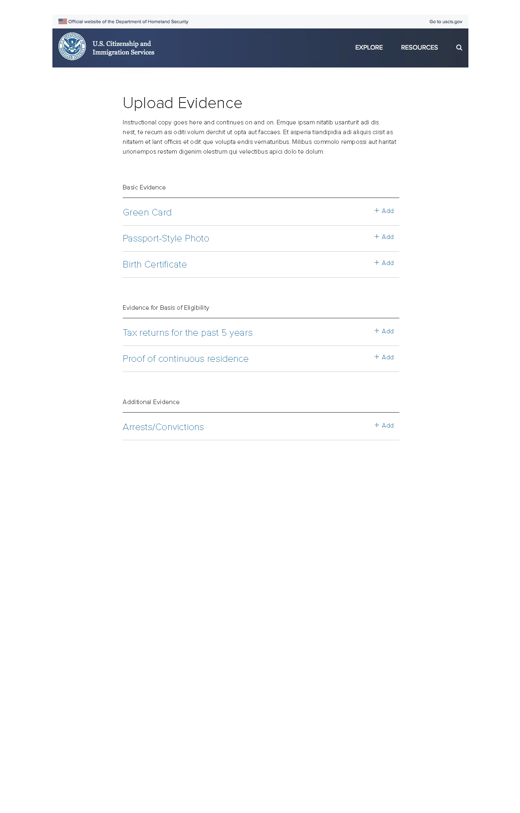
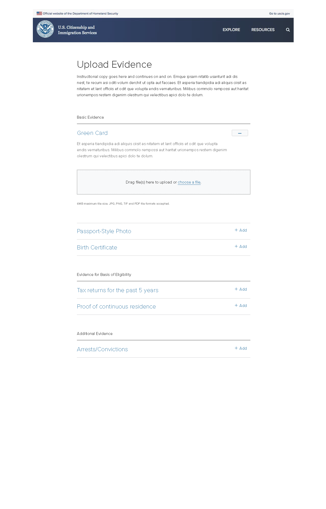

I led a team of designers who had been primarily tasked by the United States Citizenship and Immigration Services (USCIS) with redesigning the complex N-400 application for naturalization into an easier-to-understand online form.